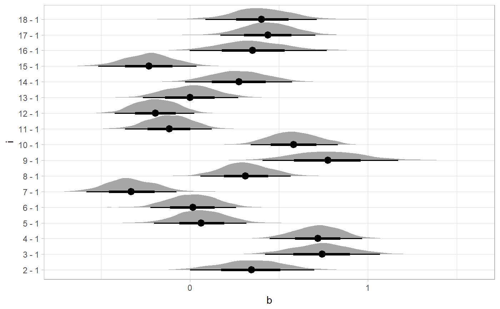
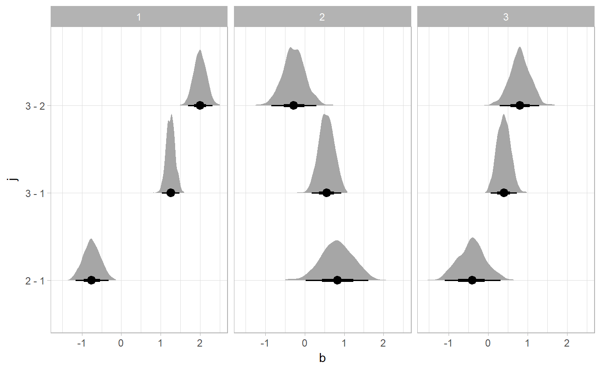

R/compare_levels.R
compare_levels.RdGiven posterior draws from a Bayesian model in long format (e.g. as
returned by spread_draws), compare the value of a variable in those draws
across different paired combinations of levels of a factor.
compare_levels(data, variable, by, fun = `-`, comparison = "default", draw_indices = c(".chain", ".iteration", ".draw"), ignore_groups = ".row")
| data | Long-format |
|---|---|
| variable | Bare (unquoted) name of a column in data representing the variable to compare across levels. |
| by | Bare (unquoted) name of a column in data that is a
|
| fun | Binary function to use for comparison. For each pair of levels of
|
| comparison | One of (a) the comparison types |
| draw_indices | Character vector of column names in |
| ignore_groups | character vector of names of groups to ignore by
default in the input grouping. This is primarily provided to make it
easier to pipe output of |
A data.frame with the same columns as data, except
that the by column contains a symbolic representation of the
comparison of pairs of levels of by in data, and
variable contains the result of that comparison.
This function simplifies conducting comparisons across levels of some
variable in a tidy data frame of draws. It applies fun to all
values of variable for each pair of levels of by as selected
by comparison. By default, all pairwise comparisons are generated if
by is an unordered factor and ordered comparisons are made if
by is ordered.
The included comparison types are:
ordered:
compare each level i with level i - 1; e.g. fun(i, i -
1)
pairwise: compare each level of by with every other
level.
control: compare each level of by with the first
level of by. If you wish to compare with a different level, you can
first apply relevel to by to set the control
(reference) level.
default: use ordered if
is.ordered(by) and pairwise otherwise.
spread_draws and gather_draws.
library(dplyr) library(ggplot2) data(RankCorr, package = "tidybayes") # Let's do all pairwise comparisons of b[i,1]: RankCorr %>% spread_draws(b[i,j]) %>% filter(j == 1) %>% compare_levels(b, by = i) %>% median_qi()#> # A tibble: 3 x 8 #> # Groups: i [3] #> i j b .lower .upper .width .point .interval #> <fct> <int> <dbl> <dbl> <dbl> <dbl> <chr> <chr> #> 1 2 - 1 1 0.343 -0.00937 0.684 0.95 median qi #> 2 3 - 1 1 0.734 0.416 1.08 0.95 median qi #> 3 3 - 2 1 0.402 -0.0133 0.791 0.95 median qi# Or let's plot all comparisons against the first level (control): RankCorr %>% spread_draws(b[i,j]) %>% filter(j == 1) %>% compare_levels(b, by = i, comparison = control) %>% ggplot(aes(x = b, y = i)) + geom_halfeyeh()# Or let's plot comparisons of all levels of j within # all levels of i RankCorr %>% spread_draws(b[i,j]) %>% group_by(i) %>% compare_levels(b, by = j) %>% ggplot(aes(x = b, y = j)) + geom_halfeyeh() + facet_grid(cols = vars(i))